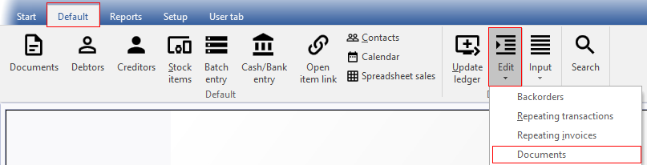
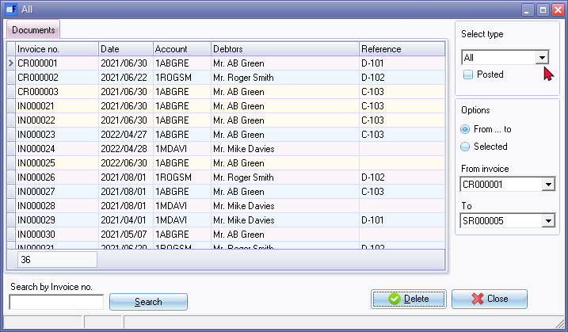
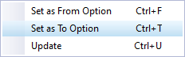

Delete documents
This option is used to delete the selected sales document types (Invoices, Credit notes or Quotes) for your debtors (customers / clients) and purchase document types (Purchases, Supplier returns or Orders) for your creditors (suppliers / vendors) which you have created or edited in Documents (Default ribbon).
|
|
An option to delete Quotes for debtors (customers / clients) and Orders for creditors (suppliers) is available when:
If you did not delete Quotes and Orders when these are confirmed or converted, these documents may be deleted with this option. |

|
|
You may only delete documents which have not yet been updated (posted) to the ledger. You will not be allowed to delete documents (i.e. Invoices, Credit notes, Purchases or Supplier returns) which have been updated (posted) to the ledger. Confirmed, posted or unposted Quotes and Orders may be deleted. |
|
|
If the Document posting option is selected on the Documents tab of Setup → Access control, the Delete button will be added to the sidebar of then Document list screen. Clicking on this button will delete a selected document. |

|
|
Once a document has been deleted you will no longer be able to reprint deleted documents. These deleted document numbers will also not be available to be selected on the Reports → Documents (Document listing, Document listing per account or Unprinted document listing). |

|
|
Any deleted documents will no longer be available to be printed or re-printed from the Documents tab of the Debtor (customer / client) accounts or from the Documents tab of the Creditor (supplier/ vendor) accounts. |
|
|
Before you decide to delete a document, it is advisable to make sure that you don't need to:
|

Delete Documents
To delete documents:
- On the Default ribbon, select Edit → Delete → Documents.

- The "Delete Invoices" screen will be displayed.
- Select type - Select Invoices, Credit notes, Quotes, Purchases, Supplier returns or Orders. If you select the "All" option, all these document types will be listed.

|
|
If the row in which a document is listed is shaded (light cream colour) (in this example CR000003, IN000021, IN000022 and IN000025), it indicates that the document is printed. The other colour shades in the rows, indicates that a document is not yet printed. You may wish to print these documents before deleting them. |
- Select the following options:
- Posted - By default, only the unposted documents will be listed. The posted option (tick box) will be inactive (cannot be ticked) for Invoices, Credit notes, Purchases or Supplier returns. These document types can only be deleted if these are not yet posted or updated to the ledger.
|
|
The posted field can only be selected for Quotes and Orders.
|
- From / To - This will display "From ... to" and the name of the Document type. This option allows you to select a starting document number on a drop-down list and a last document number which you need to delete. All documents within the selected range of document numbers will be deleted.
|
|
If you need to delete only one document, the document number in the "From ... to" fields must be the same. |
- Selected - If you select this option, the "From ... to" fields and the drop-down lists of document numbers will be de-activated. An arrow will indicate the selected document.
|
|
You may also use the Down arrow or Up arrow keys on your keyboard to select a document from the list. |
|
|
You may also right-click to access the context menu.  Update (Ctrl + U) will display a confirmation message to delete the selected document(s). |
- Click on the Delete button. The information message is displayed:
"Do you want to delete?"
- Click on the Yes button.
Finding or locating specific documents
You may also use the following options to find or locate a specific document (documents):
- Search by Invoice no. - (or document number for the selected document type) will reflect the Search by the selected Document type no.
- Enter the Document number - The document number will automatically be selected. If not, click on the Search button.
Sort sequences
Double-click on the column headings to sort the list of documents ascending or descending:
- Invoice no. - (or document number for the selected document type) - By default, all document numbers are displayed ascending (smallest document number to the latest document number). If you double-click on this heading, it will list the Invoice no. or document number for the selected document type descending (from the latest document number to the smallest or first document number).
- Date - By default, the document dates are listed by document numbers. The dates may not necessarily be in the ascending sequence. To display the dates in the descending sequence (from the latest date to the newest date), double-click on this heading. To display the dates in the ascending sequence (oldest date to the latest date), double-click on this heading again.
- Account - By default, the Debtor accounts (Invoices, Credit notes and Quotes) and Creditor accounts (Purchases and Supplier return documents and Orders) are listed by document numbers. The Debtor / Creditor account codes may not be displayed in the ascending sequence. To display the Debtor / Creditor account codes in the descending sequence (9-0 / Z-A), double-click on this heading. To display the Debtor / Creditor account codes in the ascending sequence (0-9 / A-Z), double-click on this heading again.
- Description - By default, the Debtor accounts (Invoices, Credit notes and Quotes) and Creditor accounts (Purchases and Supplier return documents and Orders) are listed by document numbers. The Debtor / Creditor account descriptions or names may not be displayed in the ascending sequence. To display the Debtor / Creditor account descriptions or names in the descending sequence (9-0 / Z-A), double-click on this heading. To display the Debtor / Creditor account descriptions or names in the ascending sequence (0-9 / A-Z), double-click on this heading again.